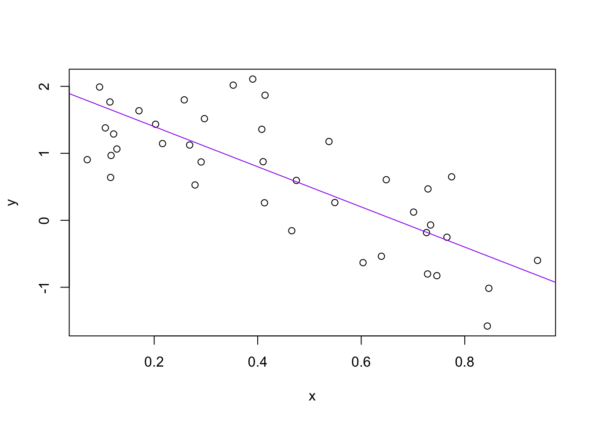

Part 6 R basics and workflows
Who is R? Why is R troubling PhD students?@AcademicChatter #AcademicTwitter
— Dr. Marie Curie (@CurieDr) January 31, 2021
There is an implicit contract with computer and scripting languages. The computer will do tedious tasks for you. In return, you must be explicit in your instructions. The computer does not have the ability to extrapolate. So we have to work within the range of what it does understand. And that is where this entire course comes into play. We are learning how to communicate in a way that it does understand. So let’s begin!
6.1 Basics of working with R at the command line and RStudio goodies
Launch RStudio/R.
Notice the default panes:
- Console (entire left)
- Environment/History (tabbed in upper right)
- Files/Plots/Packages/Help (tabbed in lower right)
FYI: you can change the default location of the panes, among many other things: Customizing RStudio.
Go into the Console, where we interact with the live R process.
Make an assignment and then inspect the object you just created:
x <- 3 * 4
x
#> [1] 12All R statements where you create objects – “assignments” – have this form:
objectName <- valueand in my head I hear, e.g., “x gets 12”.
You will make lots of assignments.
The <- is more commonly used by R programmers. You can also use = instead.
There are some small differences between the two, but they rarely come up.
Feel free to use whichever you prefer.
For typing <-, try RStudio’s keyboard shortcut: Alt + - (the minus sign).
Notice that RStudio auto-magically surrounds <- with spaces, which demonstrates a useful code formatting practice. Code is miserable to read on a good day. Give your eyes a break and use spaces.
RStudio offers many handy keyboard shortcuts. Also, Alt+Shift+K brings up a keyboard shortcut reference card.
6.1.1 Object names
Object names cannot start with a digit and cannot contain certain other characters such as a comma or a space. You will be wise to adopt a convention for demarcating words in names.
i_use_snake_case
evenOthersUseCamelCase
dont.use.periodsDon’t use periods. I recommend snake_case or camelCase.
Make another assignment:
this_is_a_really_long_name <- 2.5To inspect this assignment, try out RStudio’s completion facility: type the first few characters, press TAB, add characters until you disambiguate, then press return.
Make another assignment:
brenton_rocks <- 2 ^ 3Let’s try to inspect:
brentonrocks
#> Error in eval(expr, envir, enclos): object 'brentonrocks' not found
brent_rocks
#> Error in eval(expr, envir, enclos): object 'brent_rocks' not foundHere’s where that implicit contract comes in. The computer (and R) will do amazing things, if we can ask it to do those things in a way it understands. Typos matter. Case matters. Precision matters. We have to work within it’s narrow range of ability.
6.1.2 Functions
R has a mind-blowing collection of built-in functions that are accessed like so:
functionName(arg1 = val1, arg2 = val2, and so on)Let’s try using seq() which makes regular sequences of numbers and, while we’re at it, demo more helpful features of RStudio.
Type se and hit TAB. A pop up shows you possible completions. Specify seq() by typing more to disambiguate or using the up/down arrows to select. Notice the floating tool-tip-type help that pops up, reminding you of a function’s arguments. If you want even more help, press F1 as directed to get the full documentation in the help tab of the lower right pane. Now open the parentheses and notice the automatic addition of the closing parenthesis and the placement of cursor in the middle. Type the arguments 1, 10 and hit return. RStudio also exits the parenthetical expression for you. IDEs are great.
seq(1, 10)
#> [1] 1 2 3 4 5 6 7 8 9 10The above also demonstrates something about how R resolves function arguments. You can always specify in name = value form. But if you do not, R attempts to resolve by position. So above, it is assumed that we want a sequence from = 1 that goes to = 10. Because we didn’t specify step size, the default value of by in the function definition is used. In this case, the default is 1. For functions I call often, I might use this resolve by position for the first argument or maybe the first two. After that, I always use name = value.
Make this assignment and notice similar help with quotation marks.
yo <- "hello world"If you just make an assignment, you don’t get to see the value, so then you’re tempted to immediately inspect.
y <- seq(1, 10)
y
#> [1] 1 2 3 4 5 6 7 8 9 10This common action can be shortened by surrounding the assignment with parentheses, which causes assignment and “print to screen” to happen.
(y <- seq(1, 10))
#> [1] 1 2 3 4 5 6 7 8 9 10Not all functions have (or require) arguments:
date()
#> [1] "Tue Mar 8 00:14:14 2022"Now look at your workspace – in the upper right pane. The workspace is where user-defined objects accumulate. You can also get a listing of these objects with commands:
objects()
#> [1] "all_pkgs" "brenton_rocks"
#> [3] "check_quietly" "ds4p_urls"
#> [5] "install_quietly" "pretty_install"
#> [7] "sample_no_surprises" "session"
#> [9] "shhh_check" "slide_url"
#> [11] "this_is_a_really_long_name" "x"
#> [13] "y" "yo"
ls()
#> [1] "all_pkgs" "brenton_rocks"
#> [3] "check_quietly" "ds4p_urls"
#> [5] "install_quietly" "pretty_install"
#> [7] "sample_no_surprises" "session"
#> [9] "shhh_check" "slide_url"
#> [11] "this_is_a_really_long_name" "x"
#> [13] "y" "yo"If you want to remove the object named y, you can do this:
rm(y)To remove everything:
rm(list = ls())or click the broom in RStudio’s Environment pane.
6.2 Workspace and working directory
One day you will need to quit R, go do something else and return to your analysis later.
One day you will have multiple analyses going that use R and you want to keep them separate.
One day you will need to bring data from the outside world into R and send numerical results and figures from R back out into the world.
To handle these real life situations, you need to make two decisions:
- What part your analysis is “real”, i.e. will you save it as your lasting record of what happened?
- Where does your analysis “live”?
6.2.1 Workspace, .RData
Start to quit RStudio, but don’t finish yet!
Quit R/RStudio, either from the menu, using a keyboard shortcut, or by typing q() in the Console. You’ll get a prompt like this:
Save workspace image to ~/.Rdata?
This is offering to save your R workspace (all of the objects you made) so that you can reload them later. This seems okay, but how are you going to remember where each of those objects came from? It’s a recipe for irreproducible disaster!
Let’s change some settings in RStudio to encourage a more reliable workflow.
In RStudio, click Tools -> Global options…
In the window that pops up, on the General pane,
- Uncheck “Restore .RData into workspace at startup
- Set “Save workspace to .RData on exit” to “Never”
- Uncheck “Always save history (even when not saving .RData)”
6.2.2 Working directory
Any process running on your computer has a notion of its “working directory”. In R, this is where R will look, by default, for files you ask it to load. It also where, by default, any files you write to disk will go.
You can explicitly check your working directory with:
getwd()It is also displayed at the top of the RStudio console.
For right now, we will let R set its own working directory at startup. We will adopt a more reliable workflow for organizing our projects in a few weeks.
You might sometimes see something like this in someone’s script.
setwd("C:\\Users\\brenton\\Documents\\myCoolProject")This sets the working directory in the R session to that file path.
Do not do this! It ensures that the script only works on your computer!
We will explore more reliable ways to control the working directory in a few weeks.
6.3 Saving an R script
Usually, we want to save the analyses we run so we can re-run them later or refer back to them. We do that with scripts.
Let’s make an R script. Click File -> New File -> R Script.
A new part of the RStudio window appears. The Script pane.
Copy and paste the following code into your new script.
# what do these lines do?
a <- 2
b <- -3
sig_sq <- 0.5
# what about these?
x <- runif(40)
y <- a + b * x + rnorm(40, sd = sqrt(sig_sq))
(avg_x <- mean(x))
#> [1] 0.48
# these lines save some output...
write(avg_x, "avg_x.txt")
plot(x, y)
abline(a, b, col = "purple")
dev.print(pdf, "toy_line_plot.pdf")
#> quartz_off_screen
#> 2Run the lines of your script by selecting them and clicking the Run button in RStudio or by typing Ctrl/Cmd + Shift + Enter/Return.
Now let’s save the file. Click on the floppy disk to save.
Give it a name ending in .R, I used toy-line.R. Now which folder the file will be saved in. By default, it will go in the current working directory.
Quit RStudio. Go to the folder where you saved the file and it there.
Restart RStudio. Notice that the the files you had open are restored by default. That’s helpful.
Let’s change our script to make the sample size easily editable.
At the top of your script, assign a new sample size to n, e.g. n <- 80.
Then, replace all the hard-coded 40s with n. Change some other minor-but-detectable stuff, e.g. alter the slope of the line b, the color of the line, … whatever.
Practice the different ways to re-run the code:
- Walk through line by line by keyboard shortcut (Command + Enter)
- Walk line by line with the mouse (click “Run” in the upper right corner of editor pane).
- Select multiple lines and run using the keyboard shortcut or Run button.
Visit your figure in your computer’s file system and view it to verify that the PDF is changing as you expect.
Note that you have edited this figure using only code. You never clicked your mouse, typed a file name, or used the keyboard. This means that you can reproduce the figure (or change it) easily again in the future with with no head-scratching!
6.4 Script housekeeping
Always save your R scripts with a .R so that your computer knows what to do with them.
In R, comments start with one or more # symbols. Use them. RStudio helps you (de)comment selected lines with Ctrl+Shift+C (Windows and Linux) or Command+Shift+C (Mac).
To be sure your code is doing what you expect, a good habit is to restart your R session and run your script from the top. To do that, click Session -> Restart R. Try it!
Avoid using the mouse for pieces of your analytical workflow, such as loading a dataset or saving a figure. Terribly important for reproducibility and for making it possible to retrospectively determine how a numerical table or PDF was actually produced (searching on local disk on filename, among .R files, will lead to the relevant script).
6.5 To do before next class
Make an account on GitHub.
- Make your username recognizable!
- Please put up a profile photo or image on GitHub—it makes the class community more personable and easier to work with.
Finish any in-class activities listed in today’s section of the guidebook that you didn’t get done.
Install the software stack for this course, as indicated below.
Optionally, register for the Student Developer Pack with GitHub for a bunch of free perks for students!
6.5.1 Software Stack Installation
Install R and RStudio.
- R here: https://cran.r-project.org
- RStudio here: https://www.rstudio.com/products/rstudio/download/
- Commentary on installing this stuff can be found at stat545.com: r-rstudio-install
Install GitHub: https://desktop.github.com/